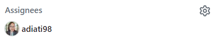

Contributor Responsibilities¶
Overview¶
Contributions on projects using the ITS Open Source Process are always welcome, no matter how large or small. However, before contributing, it's important to familiarize yourself with the following resources of the project:
Some of this information is standardized in this document, but specific projects can extend or make exceptions to the process and will always have their own project-specific goals. Contributors are responsible for being familiar with the information contained in the following project files, as stored in the project's root directory:
- README.md: Provides an overview of the specific project,
- CODE_OF_CONDUCT.md: Identifies the code of conduct for the project, and
- CONTRIBUTING.md: Identifies project-specific rules for contributing.
For projects following the ITS Open-Source Process, the last two files will typically only identify exceptions or extensions to the rules defined by this document.
The overall process for contributing to an ITS open-source project is shown in Figure 4-1 and described in the remainder of this section.

Prerequisites¶
Join the relevant working group¶
Those wishing to contribute should join the relevant working group.
Note
Most projects using the ITS Open-Source Process are led by working groups (WGs) within standards development organizations (SDOs). The lead WG and SDO is typically identified within the README file in the root directory of the project repository. Contributors are strongly encouraged to join the corresponding working group to promote better communication among community members and to develop a common vision for the project.
Example
The ITS Open-Source Process project is led by the Base Standards and Profiles 2 (BSP2) WG of the National Transportation Communications Interface Protocols (NTCIP) Joint Committee (JC).
NTCIP Guidance
Within the NTCIP, any interested party can send an email to ntcip@nema.org. The email should indicate (1) the working group of interest, (2) the stakeholder sector (e.g., infrastructure owner operator, other government, consultant, device manufacturer, management station developer, etc.), (3) contact information, and (4) a short biography.
Install Software¶
Git¶
Those wishing to contribute shall install Git on their local computer.
Graphical User Interface¶
Those wishing to contribute may install a graphical user interface (GUI) for Git on their local computer.
Development Environment¶
Those wishing to contribute shall install the development environment on their local computer.
Note
Git is available for all major development platforms, including Windows, Mac OS, and Linux. Git allows proper version control among multiple contributors. Git can be downloaded from https://git-scm.com/downloads.
Git natively uses a command line interface (CLI), which can be difficult for beginners. There are a variety of graphical user interfaces (GUIs) that are available to assist with interfacing with Git.
Example
Example GUIs for beginners include:
- GitHub Desktop: Very beginner level with minimal user interface
- SourceTree: Beginner-friendly with support for advanced Git functionality
- GitKraken: Beginner-friendly with advanced options and modern UI with useful video clips to explain how to perform tasks.
NTCIP Guidance
While contributors are allowed to use the CLI or any GUI of their preference, this document references GitKraken videos due to(1) the user-friendly design of GitKraken, (2) the high-quality help (including videos) available for GitKraken.
Establish an Account on the Repository Hosting Platform¶
Those wishing to contribute shall fork the repository to their own account.
Note
All edits are originate within the contributor's account and all contributions can be traced back to the contributor.
NTCIP Guidance
Create an account on GitHub. This requires a valid email address but is free for open-source work.
Fork the repository¶
Those wishing to contribute shall fork the repository to their own account.
Note
The main repository is shared by the entire open-source community on GitHub. Individual contributors are not allowed to directly edit this file as that would create a chaotic environment. Forking a repository creates a copy of the repository on the repository hosting platform within the contributor's account. The contributor can then edit the copied repository (as described below). The contributor's repository will inherit the visibility of the project being forked (i.e., for open-source projects, it will be public). This allows the open-source community to review the proposed changes prior to accepting their incorporation into the community repository.
Github Guidance
Press the "Fork" button in the upper-right portion of the shared repository's home page (e.g., https://github.com/<account>/<project>). For complate details, see the Fork a Repository article on GitHub help.
Clone the repository¶
The contributor shall clone (i.e., copy an instance of) the forked repository to the local machine where edits are to be made.
Note
While a fork creates a copy on the host platform (which can be viewed by others), cloning your forked repository creates a copy of your forked repository on a local machine. This allows the contributor to edit files on a local machine rather than directly in the online environment.
GitKraken Guidance
Claim an Issue¶
Before starting on any changes to the project, a contributor shall claim an associated issue.
A contributor shall not claim an issue that has the label "triage".
A new contributor to a project may claim an issue tagged as good first issue, or beginners only.
Experienced contributors shall not claim issues tagged with the label "beginners only".
Experienced contributors should avoid issues tagged with the label "good first issue".
Note
Taking ownership of an issue:
- Notifies maintainers that work is starting to address the issue,
- Allows efficient communication by allowing the maintainers and contributor to discuss the issue and proposed changes early in the update cycle,
- Provides a historical record of the steps taken to address the issue,
- Helps to block inappropriate pull requests as any pull request without an associated issue can be easily rejected.
When you're new to a project, it's a good idea to start with small, manageable tasks, fixing bugs, adding tests, or updating documentation. These will often be tagged with the text "good first issue" or "beginners-only". This will help you become familiar with the material and development workflow without getting overwhelmed. The goal is to reserve at least some of these issues for new contributors or until the end of the project; if everyone solves these problems first, it makes it more challenging for contributors to gain experience.
GitHub Guidance
If an issue is not assigned and it is not labeled with
"triage", it is generally assumed to be available for anyone to work on.
Take control of the issue by submitting a comment of .take on the selected
issue). When an issue is assigned, it will be indicated under the
"Assignees" section of the issue.

Note
Projects can implement additional rules regarding the assignment of issues. Always review the project's contributing guidelines to ensure you are aware of any variations from this standard process.
Tip
If you get stuck while working on your changes or need other clarification, you can always ask for help using the discussions tab of the project. For example, you can get help for the ITS Open-Source Process project at the Discussion Tab.
Create a Branch¶
Prior to starting work on a claimed issue, the contributor shall create a separate branch for all edits related to that singlular issue.
Note
Creating a separate branch facilitates tracking of changes and allows easier roll-backs of the project to known states.
Make Edits¶
Once the contributor has claimed an issue and has a branch devoted to the development of that issue, the contributor shall make changes in the local branch according to project guidelines.
Note
Annex B, C, and D provide preferred guidelines that can be referenced for different types of contributions.
If you have questions or concerns during the process (especially between meetings of the corresponding WG), you can use the Discussions tab associated with the project. These forums can be very useful in knowledge sharing and forming consensus, however, users should be aware that the discussions tab does not represent official decisions of the WG.
Tip
Avoid addressing any other issues as this (1) makes the change larger and delays completion of your primary task, (2) can overlap with changes being made by others, and (3) complicates version control by not clearly documenting when specific changes were made. However, in some cases, it may be appropriate to address multiple small and similar issues at once. For example, multiple grammar issues in documentation can be grouped into a single pull request.
Pull and Merge Updates¶
Prior to submitting a PR, the contributor shall pull the latest updates incorporated into the shared project and merge these updates into the contributor's working branch.
Note
Because multiple contributors can be working on the same project simultaneously, care must be taken to ensure that each contributor has the latest version of files prior to proposing their changes to be incorporated into the shared repository. This is done by first pulling any changes from the shared repository into the contributor's forked version and then pulling those changes down into the contributor's local branch. During this process, the Git environment will highlight any conflicts (e.g., if the contributor and someone else changed the same line of the same file). When this occurs, the contributor will need to resolve each conflict prior to finalizing the merge.
GitHub Help
To update your local copy, first update your forked (origin) repository:
Go to your forked repository on GitHub. Click the "Sync fork" button. Click the green "Update branch" button.
Next, pull the latest changes in the main branch in the origin repository to update your local working branch by following these steps in your terminal:
git checkout YOUR-BRANCH-NAME
git pull origin main
Test the Updates¶
After pulling and merging the latest updates but prior to submitting the PR, the contributor shall install any necessary dependencies and test the changes to ensure that the changes provide the intended operation without any new bugs.
Note
It is critical that updates are tested prior to being incorporated into the final code (this includes ensuring that documentation files render correctly). Specific projects can define their own testing process and procedures. You can find the instructions on how to run a project locally in the README file or in the contributing guidelines.
Commit the Update¶
Prior to pushing the proposed changes to online repository, the contributor shall commit the changes in the working directory.
The contributor may perform interim commits during the development of the proposed changes.
The contributor shall use the Conventional Commits specification for structuring commit messages.
Here are some examples of Conventional Commit messages:
feat: add password reset functionality
docs: update installation instructions
chore(build): update dependencies
fix(login): resolve issue with incorrect password validation
refactor(api): streamline error handling in user service
Note
Committing changes ensures that the changes are logged in the contributor's local git account and is required prior to pushing the material to the contributor's online copy.
Push the Update to Contributor's Online Repository¶
Once the contributor has completed the proposed revisions and has created a local commit, the contributor shall push the proposed changes to the contriutor's online repository.
Note
The changes need to be posted to the online repository so that other users can review the changes prior to their incorporation into the shared repository.
Make Pull Request¶
Once the contributor has completed the above steps, the contributor shall complete a pull request.
The contributor's pull request shall comply with the selected pull request template for the project, completing each field.
The contributor shall verify that GitHub does not report any action bot or other failures upon submitting the PR.
Note
In order to ensure that changes made to the shared repository fit with the project plan, follow subittal guidelines, and are free of bugs, it is important that they are reviewed before being incorporated. As such, rather than allowing each contributor to push changes to the shared repository without any review, they request the maintainer to pull the proposed changes. The request initiates the review process, and if successful, the changes will be pulled. The request for the maintainers to pull the updates is called a "pull request" (PR). In order to ensure that these requests are valid and useful, they must comply with the pull request template (e.g., identify the issue that the change claims to address).
It is especially important that the PR identifies the issue that the PR claims to address and must prefix the issue number with "Fixes #" to ensure that the issue is closed once the change is accepted.
The contributor will need to correct any errors that occur during the submittal process to ensure that the PR is received by the maintainers.
Warning
A PR may be marked as invalid and closed if:
- the issue is not assigned to the contributor who opened the PR,
- no issue is linked to the PR,
- the PR template is incomplete, or any section in the template is deleted, or
- changes are made directly in the default (
main) branch.
Cooperate with Reviewers¶
The contributor shall work with the review team to address any questions, concerns, or problems that arise.
The contributor may appeal any direction received from the reviewers to the parent WG.
The contributor shall accept the direction of the review process, including any appeals.
Note
After a pull request has been submitted, reviewers can have questions or concerns (e.g., failure to comply with style guidelines). In addition, if multiple proposals are received in a short period, last minute changes can cause merge errors that need to be resolved. The contributor is typically the person most qualified to make revisions to the proposed changes without introducing errors. Although expected to be rare, there can be instances where the contributor and reviewers have different opinions about how a change should be implemented. The shared project is managed by the entire team and the contributor needs to respect the decisions made by the full team.
What Happens Next?¶
After your contribution has been submitted and reviewed, one of the following outcomes may occur:
-
Your contribution is accepted: If your contribution is approved by the project maintainers, it will be merged into the main branch of the codebase.
-
Your contribution requires changes: Sometimes, the project maintainers may request changes to your contribution before it can be accepted. This could be due to coding issues, conflicts with other changes, or a need for additional documentation. In this case, make the requested changes and resubmit your pull request.
-
Your contribution is rejected: In some cases, your contribution may not align with the project's goals or requirements, or it may not be the best solution to a problem. If your contribution is rejected, don't be discouraged. Take the feedback you received as an opportunity to learn and improve. You can always try contributing to another project or submitting a different contribution to the same project.
Keeping Branches Up to Date¶
It is highly recommended that you update your remote and local branches
habitually. That way, your branch will have the latest update when merged into
the main branch of the original (upstream) repository.
The best times to update your branches are before you push your changes to the remote repository and while you're waiting for your pull request to be reviewed.
In general, it is preferrable to make small incremental changes to the project and to provide the updated materials as soon as possible after taking control of an issue. The longer the duration between checking out the project and submitting a pull request the higher the chance that another contributor will make competing changes in one of your files, which may need to be manually inspected to properly merge the changes.
Merge Conflicts¶
Merge conflicts are something you'll commonly encounter when contributing to an open source project. When two branches have made different changes to the same line(s) in the same file(s), Git cannot automatically determine which change to keep, resulting in a conflict.
When a merge conflict occurs, Git adds conflict markers (<<<<<<<, =======,
and >>>>>>) to indicate the conflicting lines from different branches.
Everything between the <<<<<<< and ======= is the changes that you worked on
(current changes). And everything between the ======= to >>>>>>> is the
incoming changes from the remote main branch.
You need to pay attention to the conflicts and decide how you want to resolve them. You can keep only your change, incoming change, or both changes.
Tips to Prevent Resolving Merge Conflicts Repeatedly¶
Some open source repositories, such as OpenSauced's guestbook and pizza-verse repositories, have high contribution activities in the same files that can cause merge conflicts.
Below are some tips to prevent you from resolving merge conflicts repeatedly when contributing to open source projects:
1. Following Instructions¶
Ensure you follow the instructions in the project's README or Contributing Guide, and don't miss any step.
2. Pull Request Form¶
Complete the template form and fill in all areas when creating a pull request.
3. Resolving Merge Conflicts Immediately¶
If a branch has merge conflicts that must be resolved, the merge button is automatically disabled. So, maintainers are not able to merge the pull request.
When you notice merge conflicts in your pull request or if a maintainer asks you to resolve merge conflicts, fix them immediately. The sooner you resolve the conflicts, the sooner maintainers can review and merge your pull request.
Merge Conflicts in the Guestbook Repository¶
Since the primary purpose of the OpenSauced guestbook is to add your name to
.all-contributorsrc and the README.md files, there is a high chance that you
will encounter merge conflicts.
The conflicts happen when maintainers have merged pull requests before yours while you're working on your changes or waiting for your pull request to be reviewed. And you need to resolve them before your pull request can be merged.
Resolving Merge Conflicts¶
Before resolving merge conflicts, you must first
update your branches. Then, follow these steps:
-
In the
.all-contributorsrcfile: -
Click the "Accept Both Change" option on the top of your workspace in VS Code.
-
Move your profile details to the end of the contributors' array and fix anything necessary.
-
In the
README.mdfile: -
Click the "Accept Incoming Change" option on the top of your workspace in VS Code for each conflict in this file.
-
Run
npm run contributors:generate.
You will now see that the all contributors badge has been incremented, and
your profile is generated at the end of the contributors' list in the
README.md file.
-
Add and commit your changes.
git commit -am "Resolve merge conflicts"
-
Push your commits to your remote branch.
git push
Setup¶
Install Git¶
Download and install the git program appropriate for your platform. Using default options should be fine unless you have a particular preference (e.g., for text editor).
Create a GitHub account¶
Go to github.com, create an account and sign in
Fork the Desired Repository¶
Install GitKraken¶
Recommended: Download and install GitKraken. Link GitKraken to your GitHub Account
Clone Repository¶
Make sure to select a directory where you want to store the local copy of the repository. This directory needs to be empty